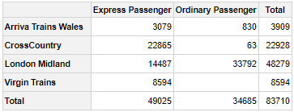
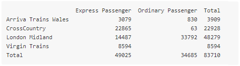
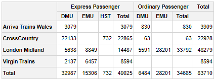
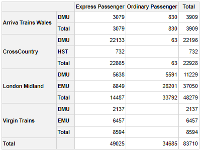
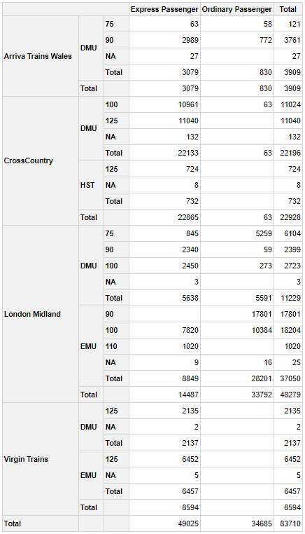
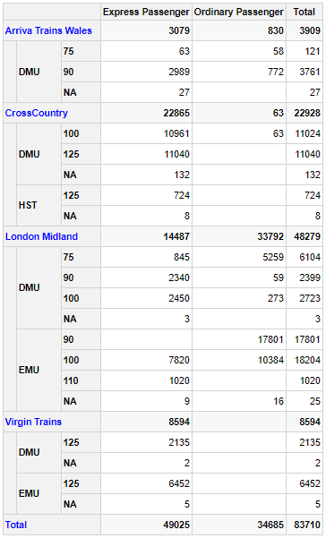
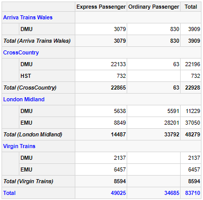
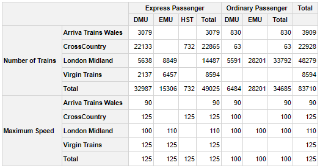
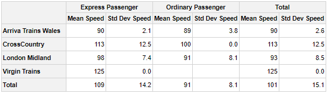
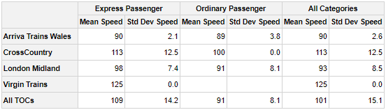

Create Pivot Tables in R
Chris Bailiss
2020-06-16
Source:vignettes/v00-vignettes.Rmd
v00-vignettes.RmdIntroduction
This is a shortened introduction to the pivottabler package.
A longer version of this introduction plus many other articles and examples can be found at: http://www.pivottabler.org.uk/articles
Contents
- Introducing pivottabler
- Basic Pivot Table
- Constructing the Basic Pivot Table
- Outputting the Pivot Table as Plain Text
- Extending the Basic Pivot Table
- Outline Layout
- Quick-Pivot Functions
- Examples Gallery
- Further Reading
Introducing pivottabler
The pivottabler package enables pivot tables to be created and rendered/exported with just a few lines of R.
Pivot tables are constructed natively in R, either via a short one line command to build a basic pivot table or via series of R commands that gradually build a more bespoke pivot table to meet your needs.
The pivottabler package:
- provides a simple framework for specifying and aggregating data, based on either the dplyr package or the data.table package.
- provides optional hooks for specifying custom calculations/aggregations for more complex scenarios
- This allows a wide-range of R functions, including custom functions written in R, to be used in the calculation logic.
- does not require the user to specify low-level layout logic.
- supports output in multiple formats as well as converting a pivot table to either a standard R matrix or data frame.
Since pivot tables are primarily visualisation tools, the pivottabler package offers several custom styling options as well as conditional/custom formatting capabilities so that the pivot tables can be themed/branded as needed.
Output can be rendered as:
- HTML, including via the htmlwidgets framework,
- Latex, e.g. to PDF, or
- Plain text, e.g. to the console.
The generated HTML, Latex and text can also be easily retrieved, e.g. to be used outside of R
The pivot tables can also be exported to Excel, including the styling/formatting.
pivottabler is a companion package to the basictabler package. pivottabler is focussed on generating pivot tables and can aggregate data. basictabler does not aggregate data but offers more control of table structure.
The latest version of the pivottabler package can be obtained directly from the package repository. Please log any questions not answered by the vignettes or any bug reports here.
Basic Pivot Table
Suppose we want to answer the question: How many ordinary/express passenger trains did each train operating company (TOC) operate in the three month period?
Either of the following sets of code will generate the relevant pivot table:
library(pivottabler) # arguments: qhpvt(dataFrame, rows, columns, calculations, ...) qhpvt(bhmtrains, "TOC", "TrainCategory", "n()") # TOC = Train Operating Company
library(pivottabler) pt <- PivotTable$new() pt$addData(bhmtrains) pt$addColumnDataGroups("TrainCategory") pt$addRowDataGroups("TOC") pt$defineCalculation(calculationName="TotalTrains", summariseExpression="n()") pt$renderPivot()

The first block of code above uses a quick pivot function. The second block of code is the verbose version. Both produce the same pivot table and output, but the verbose version helps more clearly explain the steps involved in constructing the pivot table.
Each line in the verbose version works as follows:
- Load the namespace of the pivottabler library.
- Create a new pivot table instance1.
- Specify the data frame that contains the data for the pivot table.
- Add the distinct values from the TrainCategory column in the data frame as columns in the pivot table.
- Add the distinct values from the TOC column in the data frame as rows in the pivot table.
- Specify the calculation. The summarise expression must be an expression that can be used with the dplyr summarise() function. This expression is used internally by the pivottabler package with the dplyr summarise function.
pivottableralso supports data.table. - Generate the pivot table.
Constructing the Basic Pivot Table
The following examples show how each line in the above example constructs the pivot table. To improve readability, each code change is highlighted.
# produces no pivot table library(pivottabler) pt <- PivotTable$new() pt$addData(bhmtrains) pt$renderPivot()

# specify the column headings library(pivottabler) pt <- PivotTable$new() pt$addData(bhmtrains) pt$addColumnDataGroups("TrainCategory") # << **** LINE ADDED **** << pt$renderPivot()

# specify the row headings library(pivottabler) pt <- PivotTable$new() pt$addData(bhmtrains) pt$addColumnDataGroups("TrainCategory") pt$addRowDataGroups("TOC") # << **** LINE ADDED **** << pt$renderPivot()

# specifying a calculation library(pivottabler) pt <- PivotTable$new() pt$addData(bhmtrains) pt$addColumnDataGroups("TrainCategory") pt$addRowDataGroups("TOC") # **** LINE BELOW ADDED **** pt$defineCalculation(calculationName="TotalTrains", summariseExpression="n()") pt$renderPivot()

Outputting the Pivot Table as Plain Text
The pivot table can be rendered as plain text to the console by using pt:
library(pivottabler) pt <- PivotTable$new() pt$addData(bhmtrains) pt$addColumnDataGroups("TrainCategory") pt$addRowDataGroups("TOC") pt$defineCalculation(calculationName="TotalTrains", summariseExpression="n()") pt$evaluatePivot() pt

Extending the Basic Pivot Table
There follows below a progressive series of changes to the basic pivot table shown above. Each change is made by adding or changing one line of code. Again, to improve readability, each code change is highlighted.
First, adding an additional column data group to sub-divide each “TrainCategory” by “PowerType”:
library(pivottabler) pt <- PivotTable$new() pt$addData(bhmtrains) pt$addColumnDataGroups("TrainCategory") pt$addColumnDataGroups("PowerType") # << **** CODE CHANGE **** << pt$addRowDataGroups("TOC") pt$defineCalculation(calculationName="TotalTrains", summariseExpression="n()") pt$renderPivot()

By default, the new data group does not expand the existing “TrainCategory” total. However, an additional argument allows the total column to also be expanded:
library(pivottabler) pt <- PivotTable$new() pt$addData(bhmtrains) pt$addColumnDataGroups("TrainCategory") pt$addColumnDataGroups("PowerType", expandExistingTotals=TRUE) # << ** CODE CHANGE ** << pt$addRowDataGroups("TOC") pt$defineCalculation(calculationName="TotalTrains", summariseExpression="n()") pt$renderPivot()

Instead of adding “PowerType” as columns, it can also be added as rows:
library(pivottabler) pt <- PivotTable$new() pt$addData(bhmtrains) pt$addColumnDataGroups("TrainCategory") pt$addRowDataGroups("TOC") pt$addRowDataGroups("PowerType") # << **** CODE CHANGE **** << pt$defineCalculation(calculationName="TotalTrains", summariseExpression="n()") pt$renderPivot()

It is possible to continue adding additional data groups. The pivottabler does not enforce a maximum depth of data groups. For example, adding the maximum scheduled speed to the rows:
library(pivottabler) pt <- PivotTable$new() pt$addData(bhmtrains) pt$addColumnDataGroups("TrainCategory") pt$addRowDataGroups("TOC") pt$addRowDataGroups("PowerType") pt$addRowDataGroups("SchedSpeedMPH") # << **** CODE CHANGE **** << pt$defineCalculation(calculationName="TotalTrains", summariseExpression="n()") pt$renderPivot()

As more data groups are added, the pivot table can seem overwhelmed with totals. It is possible to selectively show/hide totals using the addTotal argument. Totals can be renamed using the totalCaption argument. Both of these options are demonstrated below.
library(pivottabler) pt <- PivotTable$new() pt$addData(bhmtrains) pt$addColumnDataGroups("TrainCategory") pt$addRowDataGroups("TOC", totalCaption="Grand Total") # << **** CODE CHANGE **** << pt$addRowDataGroups("PowerType") pt$addRowDataGroups("SchedSpeedMPH", addTotal=FALSE) # << **** CODE CHANGE **** << pt$defineCalculation(calculationName="TotalTrains", summariseExpression="n()") pt$renderPivot()

This can then be rendered in outline layout:
library(pivottabler) pt <- PivotTable$new() pt$addData(bhmtrains) pt$addColumnDataGroups("TrainCategory") pt$addRowDataGroups("TOC", outlineBefore=list(isEmpty=FALSE, groupStyleDeclarations=list(color="blue")), outlineTotal=list(groupStyleDeclarations=list(color="blue"))) pt$addRowDataGroups("PowerType", addTotal=FALSE) pt$addRowDataGroups("SchedSpeedMPH", addTotal=FALSE) pt$defineCalculation(calculationName="TotalTrains", summariseExpression="n()") pt$renderPivot()

Outline Layout
Outline layout renders row data groups as headings:
library(pivottabler) pt <- PivotTable$new() pt$addData(bhmtrains) pt$addColumnDataGroups("TrainCategory") pt$addRowDataGroups("TOC", outlineBefore=list(groupStyleDeclarations=list(color="blue")), outlineAfter=list(isEmpty=FALSE, mergeSpace="dataGroupsOnly", caption="Total ({value})", groupStyleDeclarations=list("font-style"="italic")), outlineTotal=list(groupStyleDeclarations=list(color="blue"), cellStyleDeclarations=list("color"="blue"))) pt$addRowDataGroups("PowerType", addTotal=FALSE) pt$defineCalculation(calculationName="TotalTrains", summariseExpression="n()") pt$renderPivot()

Quick-Pivot Functions
To construct basic pivot tables quickly, three functions are provided that can construct pivot tables with one line of R:
-
qpvt()returns a pivot table. Setting a variable equal to the return value, e.g.pt <- qpvt(...), allows further operations to be carried out on the pivot table. Otherwise, usingqpvt(...)alone will simply print the pivot table to the console and then discard it. -
qhpvt()returns a HTML widget that when used alone will render a HTML representation of the pivot table (e.g. in the R-Studio “Viewer” pane). -
qlpvt()returns a Latex representation of a pivot table.
These functions do not offer all of the options that are available when constructing a pivot table using the more verbose syntax.
The arguments to all three functions are essentially the same:
-
dataFramespecifies the data frame that contains the pivot table data. -
rowsspecifies the names of the variables (as a character vector) used to generate the row data groups. -
columnsspecifies the names of the variables (as a character vector) used to generate the column data groups. -
calculationsspecifies the summary calculations (as a character vector) used to calculate the cell values in the pivot table. The names of the elements in this vector become the calculation names (and so the calculation headings when more than one calculation is present in the pivot table). -
formatspecifies the same formatting for all calculations (as either a character value, list or R function). See the “Formatting calculated values” section of the Calculations vignette for more details. -
formatsspecifies a different format for each calculation (as a list of the same length ascalculationscontaining any combination of character values, lists or R functions). -
totalsspecifies which totals are shown and can also control the captions of totals. This is described in more detail below.
Specifying “=” in either the rows or columns vectors sets the position of the calculations in the row/column headings.
A basic example of quickly printing a pivot table to the console:

A slightly more complex pivot table being quickly rendered as a HTML widget, where the calculation headings are on the rows:
library(pivottabler) qhpvt(bhmtrains, c("=", "TOC"), c("TrainCategory", "PowerType"), c("Number of Trains"="n()", "Maximum Speed"="max(SchedSpeedMPH, na.rm=TRUE)"))

A quick pivot table with a format specified:
library(pivottabler) qhpvt(bhmtrains, "TOC", "TrainCategory", "mean(SchedSpeedMPH, na.rm=TRUE)", format="%.0f")

A quick pivot table with two calculations that are formatted differently:
library(pivottabler) qhpvt(bhmtrains, "TOC", "TrainCategory", c("Mean Speed"="mean(SchedSpeedMPH, na.rm=TRUE)", "Std Dev Speed"="sd(SchedSpeedMPH, na.rm=TRUE)"), formats=list("%.0f", "%.1f"))

In the above pivot table, the “Total” would be better renamed to something like “All” or “Overall” since a total for a mean or standard deviation does not make complete sense.
Totals can be controlled using the totals argument. This works as follows:
- If not specified, then totals are generated for all variables.
- To hide all totals, specify
totals=NONE. - To specify which variables have totals, specify the names of the variables in a character vector, e.g. in a pivot table containing the variables x, y and z, to display totals only for variables x and z, specify
totals=c("x", "z"). - To specify which variables have totals and also rename the captions of the total cells, specify a list, e.g. to rename the totals for x to “All x” and y to “All y”, specify
totals=list("x"="All x", "y"="All y").
Returning to the previous quick pivot example, the totals can now be renamed to “All …” using:
library(pivottabler) qhpvt(bhmtrains, "TOC", "TrainCategory", c("Mean Speed"="mean(SchedSpeedMPH, na.rm=TRUE)", "Std Dev Speed"="sd(SchedSpeedMPH, na.rm=TRUE)"), formats=list("%.0f", "%.1f"), totals=list("TOC"="All TOCs", "TrainCategory"="All Categories"))

Examples Gallery
Various examples of using the pivottabler package are shown below. Please see the gallery at the bottom of the full introduction here for links to other articles showing how to construct these examples.


Further Reading
More information can be found at http://www.pivottabler.org.uk/.
A longer version of this introduction can be found here.
The full set of package vignettes can be found here.
pivottabler is implemented in R6 Classes so pt here is an instance of the R6 PivotTable class.↩